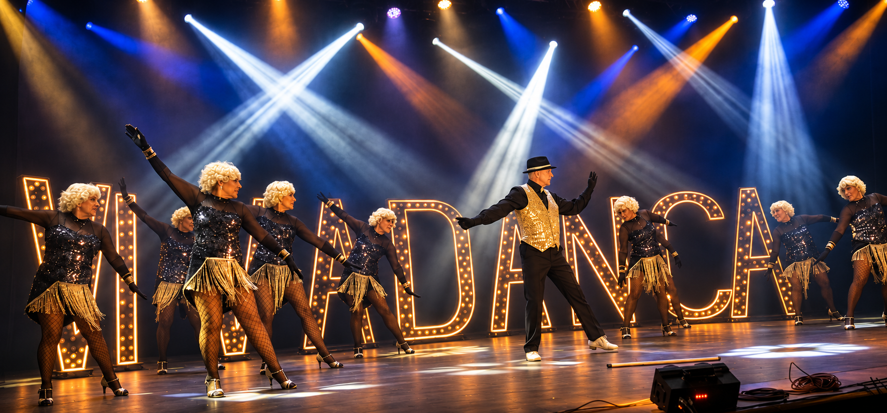
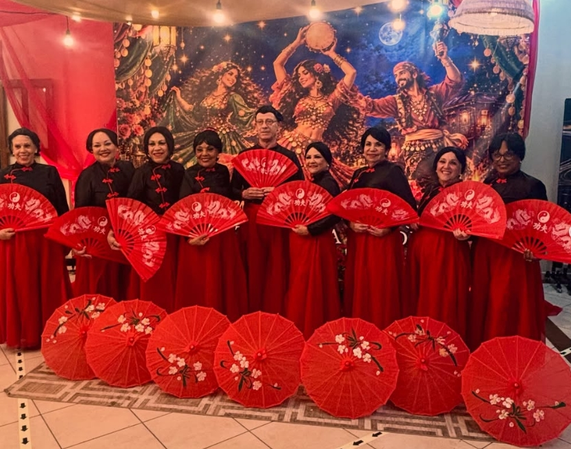
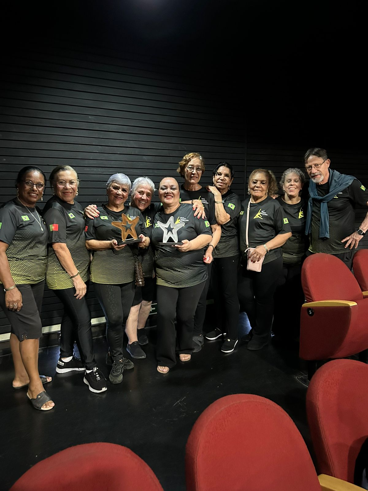
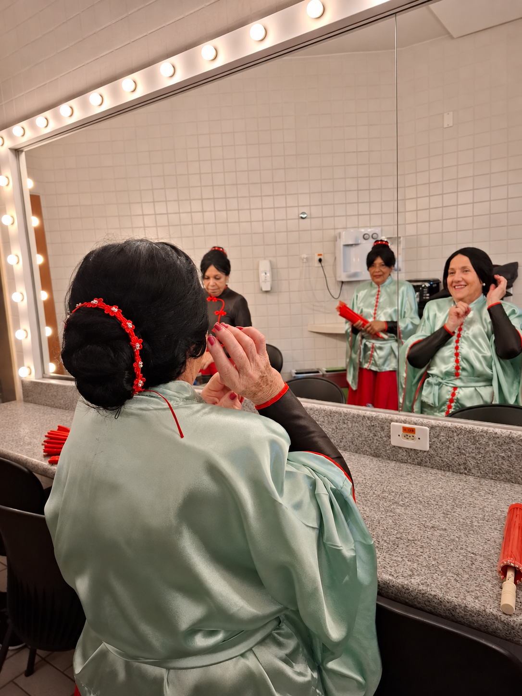

Dança · encontro · longevidade
A vida continua.
O movimento também.
Somos o Viva Dança Sorocaba 60+, um grupo artístico independente. Criamos e apresentamos trabalhos de dança com intérpretes 60+, sob orientação do coreógrafo Vítor Gil.
Conheça nossa históriaExperiência que se
transforma em arte.
Nossa essência
Nossa história.
Sempre em movimento.
Parte do nosso elenco se conheceu nas atividades de preparação para os Jogos Regionais do Idoso, em Sorocaba. Desse encontro nasceu a vontade de seguir dançando juntas.
Com o tempo, as integrantes assumiram também a produção do grupo, da organização dos figurinos às inscrições e viagens. É um trabalho coletivo que começa muito antes da entrada no palco.

Viva Dança em cenaNosso repertório
Cada gesto,
uma história.
Das danças populares ao sapateado, da dança indiana à criação contemporânea, experimentamos diferentes formas de contar histórias com o corpo.
Por trás do palco
A arte do encontro.
A força de estar junto.
A cada ensaio, o elenco aprende, experimenta e encontra maneiras de dançar em conjunto. Em cena, cada intérprete traz sua história e seu jeito de dar vida ao movimento.

Nosso grupo
Conheça como o trabalho coletivo acontece.

Histórias que se cruzam
Conheça quem dá vida às nossas coreografias.
Nossos encontros
Nos vemos no palco.
Levamos nossas coreografias a apresentações, mostras e festivais em Sorocaba e em outras cidades.
Agenda de apresentações
Consulte as datas e os locais dos próximos encontros.
Encontros que viraram memória
Reveja as apresentações que marcaram nosso caminho.
Repertório e memória
O que vivemos
fica na história.
Obras, fotografias e reconhecimentos guardam a memória do grupo e ajudam a contar como nosso trabalho ganhou novos palcos.
Novas histórias começam com um encontro
Faça parte deste
movimento.
Estamos abertos a convites e parcerias para levar nossas obras a novos palcos, criar e preservar a memória do grupo.
Fale com o Viva Dança